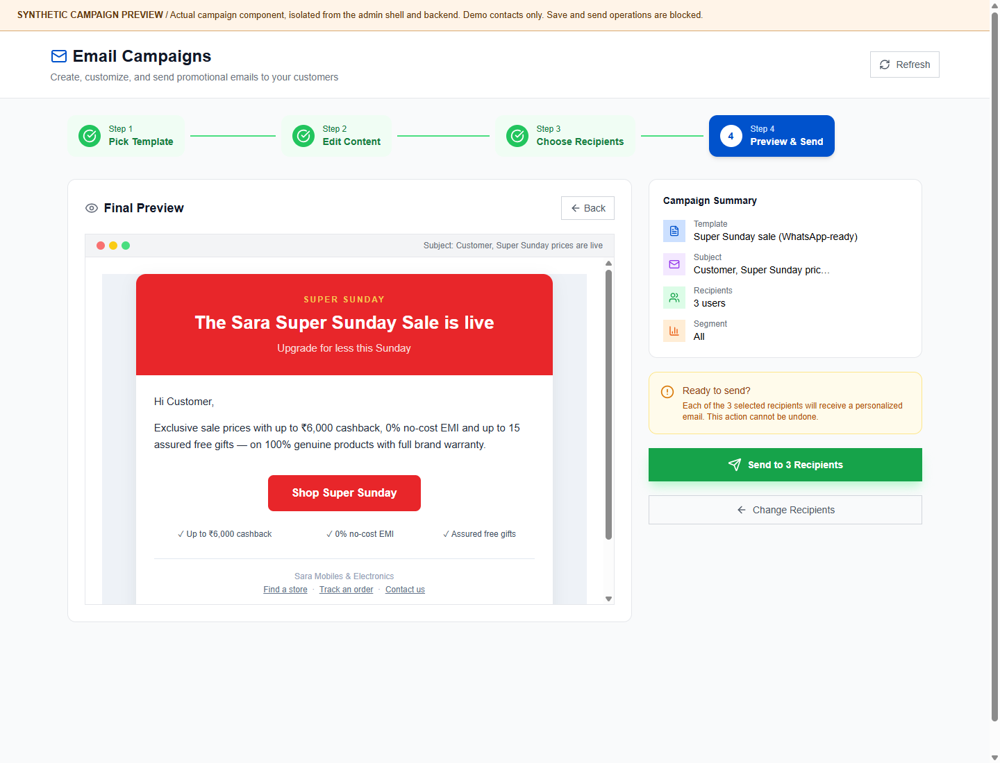
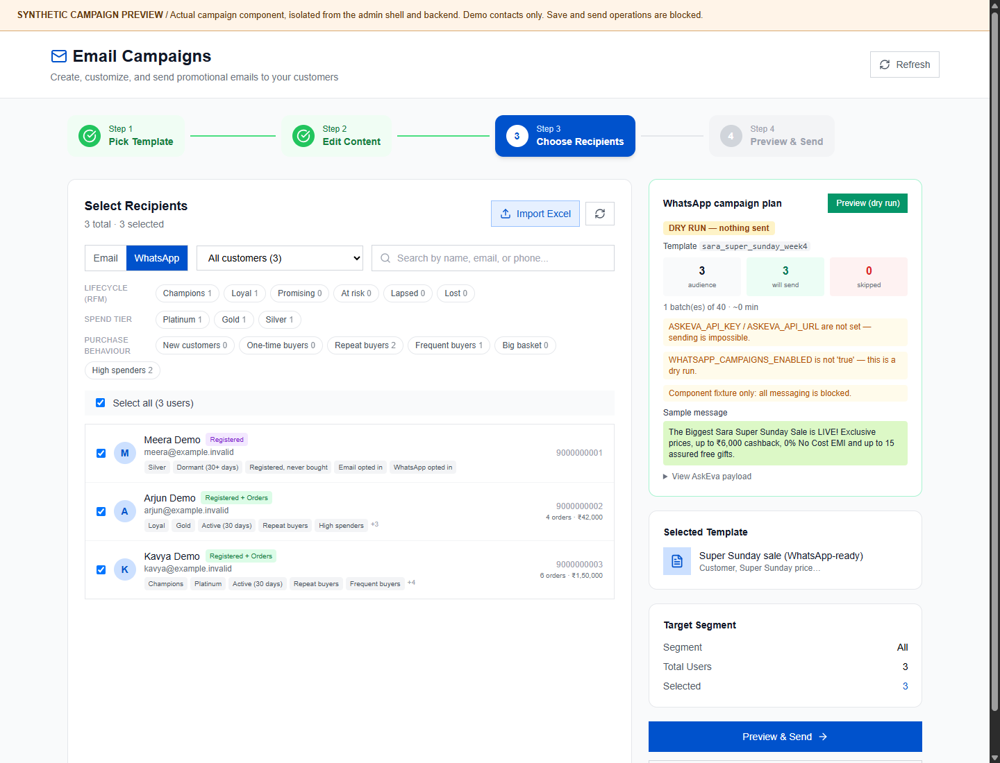
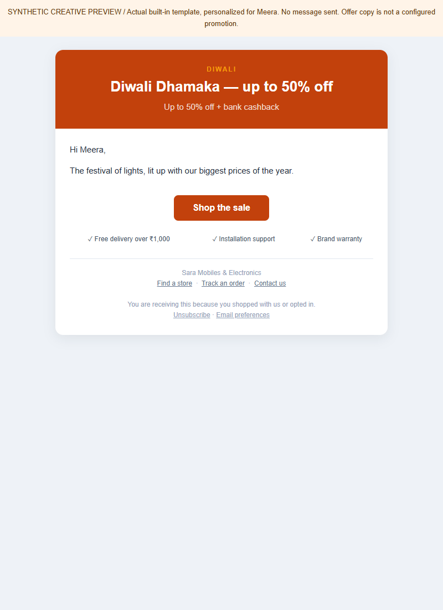
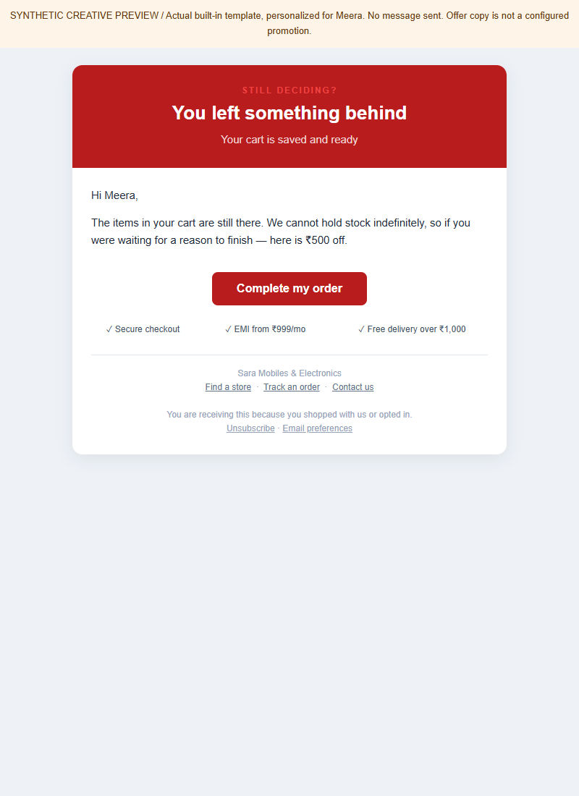

The short answer: three campaign families, not 54 different delivery systems.
You have 54 ready-made campaign creatives grouped into lifecycle, festival and promotion. You choose whom to contact using 28 audience filters. The two outbound campaign channels are email and WhatsApp. Separately, three retention engines implement nine reminder types.
Setting up a template does not activate an automatic journey. Manual email campaigns, WhatsApp planning/sending and scheduled email reminders are separate paths. There is no demonstrated all-in-one multi-step, cross-channel drip builder that automatically runs every template in sequence.
These are code-defined capabilities, not counts of your live
customers, stored campaigns or delivered messages. Five separate legacy email starter
templates also exist, including a Custom Template; database-saved templates can add more.
They are not included in the modern library count of 54. A fourth category name,
transactional-adjacent, exists in the type definition but has no catalogue entries.
Campaign walkthrough, in screenshots
Follow the four campaign-creation steps, then compare the WhatsApp preview and two customer-facing email creatives. Select a screenshot to open the original at full size.
Actual component, synthetic preview environment. The five wizard captures render the application's campaign React component and Tailwind theme independently of the Next.js admin shell. API responses use three fictional opted-in contacts; there is no connection to customer records, SMTP or AskEva. Saving and sending are blocked. The content screenshot uses the component's HTML-source mode; the visual rich-text editor was not exercised. These images illustrate the workflow, not a hosted login, delivery or production-readiness test.
Choose the campaign that matches your objective
Start with the ready-made campaign library. Lifecycle, Festival and Promotion filters narrow the creative choices. Select a template to move into editing; selecting one does not send a message.

Review the subject, HTML and customer-facing creative
The example selects Super Sunday. The left side contains the template name, personalized subject and editable HTML; the right side shows the rendered email. Verify the advertised cashback, EMI and gifts before using this copy.

Select the audience, channel and exact recipients
Choose Email, select an appropriate segment and inspect the recipient list. Here, three fictional customers are selected. Tier and purchase tags explain how the audience filters relate to the customer.

example.invalid, and the phone numbers
are test values. Counts, spend and opt-ins are illustrative, not live customer data.Inspect the final message and selected audience before confirmation
The final page combines the rendered email with the template, subject, recipient count and segment. This is the decision point: make sure the campaign is accurate before an irreversible send.

Preview a WhatsApp plan without sending
Switch to WhatsApp in the recipient step, select the intended recipients and use Preview (dry run). The panel shows the template name, planned audience, sample message and configuration warnings.

What a Diwali email creative looks like
This is the actual built-in Diwali HTML personalized with the fictional first name Meera. It illustrates the headline, offer message, shopping CTA and footer before you configure and send an appropriate campaign.

What the manual cart-abandonment creative looks like
The customer sees a reminder that their cart is waiting and a Complete my order CTA. This is the admin library's cart template; scheduled recovery uses its own reminder message builder and is not automatically this same HTML.

1. What kinds of campaigns can I create?
Change the customer's relationship with the store
Welcome first-time buyers, grow a second order, reward loyal/VIP customers, recover shopping intent and reactivate customers who stopped purchasing.
Lifecycle is a creative category here. Most of these templates are selected and sent manually; their names do not create event triggers.
Market around an occasion
Diwali, Dhanteras, regional festivals, national holidays, seasonal sales and year-end events each have a starting creative.
The occasion calendar helps plan a campaign; it does not automatically schedule the broadcast. Confirm moving festival dates each year.
Give the customer a reason to act now
Category upgrades, flash sales, bank offers, EMI, new arrivals, clearance, referrals, store visits, spin-and-win and Super Sunday.
A template advertises an offer; it does not create a coupon, bank discount, referral ledger or campaign prize inventory.
See all 13 lifecycle templates
- Welcome / first order
- Champion / VIP early access
- Loyal / thank-you reward
- Promising / second-order nudge
- At risk / we miss you
- Lapsed / reactivation
- Lost / final touch
- Cart abandonment
- Wishlist / price-drop nudge
- Registered, never bought
- Tier upgrade congratulations
- Post-purchase cross-sell
- Appliance retention push
WhatsApp name in local approved list
See all 13 promotion templates
- TV-owner upgrade
- Cooling-season push
- Kitchen bundle
- 24-hour flash sale
- Bank / card offer
- No-cost EMI push
- Free installation offer
- New arrivals
- Clearance / last units
- Referral programme
- Drive to store
- Lucky draw / spin and win
- Super Sunday sale
WhatsApp name in local approved list
See all 28 festival and seasonal templates
- Diwali
- Dhanteras
- Navratri
- Dussehra
- Durga Puja
- Ganesh Chaturthi
- Onam
- Holi
- Raksha Bandhan
- Eid
- Pongal / Sankranti
- Gudi Padwa / Ugadi
- Baisakhi / Vishu
- Akshaya Tritiya
- Karwa Chauth
- Bhai Dooj
- Republic Day
- Independence Day
- Children's Day
- Christmas
- New Year
- Year-End Sale
- Valentine's Day
- Summer Sale
- Monsoon Sale
- Wedding Season
- Black Friday
- Financial Year-End Clearance
Review the creative before sending. Existing copy contains specific discounts, store counts, VIP perks, referral rewards and timing promises. Those are not proof that the advertised benefit exists or applies to the recipient. Use valid configured offers and accurate business terms; do not send unverified stock urgency or automatically promise every customer a reward.
2. Which customers can I market to?
The application tags customers into overlapping groups. One customer can be a loyal buyer, Gold member and TV buyer at the same time. The picker chooses a segment; it is not a demonstrated visual AND/OR rules builder.
Lifecycle / RFM: 6
RFM means recency, frequency and monetary value. These are purchase-based classifications, not email-open or website-browsing scores.
- Champions: recent, high frequency or high spend
- Loyal: recent buyers with stronger purchase value
- Promising: recent buyers with lower value so far
- At risk: last purchase 91-180 days ago
- Lapsed: last purchase 181-365 days ago
- Lost: over 365 days or no last-order date in the RFM scorer
Spend tiers: 3
Based on qualifying spend in the profile's rolling 365-day window.
- Platinum: INR 100,000 or more
- Gold: INR 25,000 to below 100,000
- Silver: below INR 25,000
Purchase behaviour: 6
- New customers: first order within the last 30 days
- One-time buyers: exactly one order
- Repeat buyers: two or more orders
- Frequent buyers: five or more orders
- Big basket: average order value at least INR 50,000
- High spenders: lifetime spend at least INR 10,000
New customer is not exclusive to one-time buyers: a customer can place multiple orders within their first 30 days.
Engagement and shopping intent: 6
- All customers
- Active: ordered within 30 days
- Dormant: no order within 30 days
- Registered, never bought
- Abandoned cart: currently has a non-empty cart
- Wishlist holders: currently has saved products
The manual abandoned-cart audience does not mean four hours have elapsed; the scheduled recovery engine has its own age rules.
Category affinity: 5
- TV buyers
- Refrigerator buyers
- Washing-machine buyers
- AC / cooling buyers
- Kitchen-appliance buyers
Derived from purchase category/name signals, not a real-time machine-learning recommendation engine.
Channel consent: 2
- Email opted in
- WhatsApp opted in
An email address or phone number alone is not permission to send marketing. The customer must have the relevant stored opt-in.
Anonymous visitors are not an automatic contact list. Registered users and past buyers can appear in audience data, but order-only guest recipients currently default to no marketing consent. Imported Excel email addresses are accepted for email sending only when matched to an existing opted-in recipient. Group totals overlap and must not be added together as unique customer counts.
3. How can a message reach the customer?
Personalized HTML email through SMTP
Choose a built-in or saved template, edit the subject/body, select opted-in recipients and confirm the send. The sender personalizes the name, adds an unsubscribe link and reports sent/failed counts.
The sender uses batches of 50 with a 30-second pause between batches. Provider credentials, inbox delivery and serverless execution limits still need release verification.
AskEva approved-template messages
The admin's WhatsApp option builds a dry-run plan. A separate backend send path
requires AskEva configuration, WHATSAPP_CAMPAIGNS_ENABLED=true and
an explicit confirm: true request.
Keep requireConsent: true. The API's consent option
is configurable, so do not treat default preview filtering as an immutable
guarantee for custom integrations.
The final admin Send button still sends email. Selecting WhatsApp in the audience step does not turn that final button into a WhatsApp broadcast. Use the UI for its labelled dry-run plan; do not assume a finished WhatsApp sending wizard exists.
WhatsApp template readiness and batching limits
All 54 modern campaign entries have a WhatsApp counterpart, but only two counterpart names match the source's local approved-template list:
- Appliance retention push:
the_epic_full_moon_day - Super Sunday:
sara_super_sunday_week4
The other 52 catalogue entries do not match that list. This is a source-code inventory, not a fresh provider approval check. Reconfirm the actual approved template, language, parameters and account access before sending.
The plan advertises batches of 40 with 20-second delays. The current live API executor loops over messages sequentially without applying those pauses. Do not rely on the preview's timing estimate as enforced throttling.
No equivalent SMS or push campaign sender was found in these marketing paths. A stored SMS consent flag, analytics tags or an advertising banner is not an implemented SMS/push broadcast channel. Email and WhatsApp are separate sends, not automatic fallback channels.
4. What happens after I set up a campaign?
No guaranteed inbox-to-purchase attribution. Campaign history exposes email send counts; retention exposes reminder counts. Provider success is not the same as delivery, opening, clicking or buying. Do not report conversions, revenue attribution or an automatic email-to-WhatsApp fallback without separately implementing and validating them.
5. The nine implemented reminder types
These are eligibility rules, not promises that each customer receives all nine messages. They run through three email engines: cart recovery, wishlist alerts and lifecycle reminders.
| Type / engine | When the customer becomes eligible | Intent and limits |
|---|---|---|
| 1. Abandoned cart Cart recovery |
A signed-in customer's non-empty cart has been inactive for more than 4 hours, and is no older than 14 days. | Bring them back to the cart. At most two reminders per stored cart reminder state. The second waits at least 44 hours after the first actual send. |
| 2. Wishlist price drop Wishlist alerts |
A saved product's price drops at least 5% compared with the previous snapshot. | Link to that product. The first run establishes a baseline and sends no transition alert for an item without a previous snapshot. |
| 3. Wishlist restock Wishlist alerts |
A saved product changes from out of stock to in stock between snapshots. | Invite the customer to buy. One wishlist alert per customer per run; a price drop takes priority when both changes apply to the selected item. |
| 4. Review request Lifecycle |
7-13 days after recorded delivery; older records without delivery dates fall back to purchase date. | Ask for feedback. A qualifying order, available customer email, consent and lifecycle suppression checks are required. |
| 5. Accessory cross-sell Lifecycle |
14-20 days after purchase. | Suggest complementary accessories. This is a timed reminder, not proof of personalized item-level recommendations or an automatically created offer. |
| 6. Warranty notice Lifecycle |
Within the last 30 days before the category-derived warranty expiry. | Invite a cover/service discussion. The model defaults to 12 months; selected categories use 24. These estimates are not verified manufacturer warranty data. |
| 7. Service due Lifecycle |
Recurring category intervals: AC/purifier 182 days; washing machine/water heater 365 days, with a seven-day eligibility window per cycle. | Encourage servicing only for mapped categories. The reminder does not establish that an appointment has been booked. |
| 8. Consumable replenishment Lifecycle |
Water-purifier cartridge or AC service/filter-clean interval of 182 days, with a seven-day eligibility window. | Prompt replenishment or maintenance, subject to the same lifecycle frequency and eligibility checks. |
| 9. Win-back Lifecycle |
The profile is in At risk or Lapsed. The reminder key uses a 30-day time bucket. | Invite a return purchase. Lost is available for manual campaigns, but is not selected by this automatic win-back engine. |
Lifecycle frequency is deliberately selective
At most one eligible reminder per customer per run. Customers with a recent recorded reminder are suppressed for 14 days; duplicate keys are checked over a 60-day history window. A run is capped at 100 sends.
A review sent on day 7 can suppress the day 14-20 accessory window. Limited windows and competing rules mean reminders can be skipped, not automatically queued for later. These are not global caps across every manual campaign/channel.
Eligibility time is not the delivery time
The cron configuration is daily. A four-hour-old cart is only processed on the next scheduled scan; this is not an exact four-hour timer. A delayed first send also moves the earliest second send.
Cart recovery scans at most 200 candidate carts per invocation; wishlist alerts cap sends at 100. Bounds protect execution time but do not prove every eligible customer will be processed on each run.
6. Example: how you can market to one customer
Imagine Meera, an illustrative customer. This is a planning example, not a live customer record or a claim that these touches run as one automatic sequence.
She registers and opts in, but has not purchased
Manual email
Chooseno_purchaseand the Registered, never bought template. Use an actual configured first-order offer, not an invented coupon from the creative.She saves a television but is not ready to buy
Scheduled wishlist email, if activated
After a baseline exists, a price fall of at least 5% or a restock can trigger an alert. Alternatively, run a manual wishlist campaign after reviewing its claims.She adds it to her cart and leaves
Scheduled cart-recovery email, if activated
At the next scan, check inactivity, consent and cap. Send a cart reminder; if still eligible, a second touch waits at least 44 hours after the first. Do not continue sending indefinitely.She buys
Manual welcome + selected lifecycle reminders
She qualifies for recent/new-buyer targeting. You can manually send Welcome. Review and accessory reminders have their separate timing and suppression rules; do not promise both. Purchase confirmation itself is a transactional message, not this marketing template.A relevant seasonal offer arrives
Manual campaign
Select TV buyers for an upgrade campaign, or an appropriate festival audience. Choose email, or preview an approved WhatsApp counterpart. There is no automatic fallback if the email fails.She purchases again or reaches a higher spend tier
Manual retention / reward campaign
Target Repeat, Loyal, Gold or Platinum as applicable. Send a thank-you or VIP creative only when its advertised benefits actually exist. A tier-upgrade template is not an automatic trigger.She stops buying, or withdraws consent
Win-back or stop
At risk/Lapsed can become eligible for the email win-back engine. Lost can be targeted manually if appropriate. If she opts out of a channel, do not keep marketing to her on that channel.
The useful strategy is relevance, not maximum message volume. Select the next appropriate touch for the customer's state. Avoid combining a manual broadcast, cart reminder and WhatsApp push simply because all three paths exist.
7. What must be configured before this actually runs?
- Accurate customer data and consent. Profiles, order history, segments and channel opt-ins must be populated and current. Registration or a guest purchase is not automatic marketing permission.
- Valid creative, offer and destination. Verify discount eligibility, dates, stock, benefits and site origin. Checkout remains authoritative for coupon and pricing rules. An edited admin email is not automatically the retention engine's message.
- Working email provider. Configure the application's SMTP host, port, user, password and sender. Test authenticated delivery, unsubscribe and error handling with a controlled audience before any broad send.
- Working WhatsApp provider when used. Configure
ASKEVA_API_KEYandASKEVA_API_URL, appropriate sender, current approved templates and explicit send enablement. The existing UI is a preview, not a complete WhatsApp live-send wizard. - Deployed and authenticated scheduling. Source now contains Vercel
cron definitions. Confirm that the deployed plan supports them, set the matching
CRON_SECRETof at least 16 characters, and verify actual scheduled execution. No hosted jobs were triggered for this guide. - Preview the sending engines safely. Cart, wishlist and lifecycle
routes support
?dryRun=1. Profile rebuild and segmentation are separate data-changing jobs, not message previews. A dry-run does not certify provider delivery or production throughput. - Observe outcomes. Inspect failures, consent reach, truncation and reminder counts. SMTP/API acceptance is not proof of inbox delivery or read status. Establish measurement and operational ownership before scaling campaigns.
| UTC | Job | Purpose |
|---|---|---|
| 01:00 | /api/cron/rebuild-profiles | Update customer purchase/spend profiles |
| 01:30 | /api/cron/segment-customers | Recompute purchase-based RFM segments |
| 03:00 | /api/cron/cart-recovery | Send eligible cart reminders |
| 04:30 | /api/cron/wishlist-alerts | Detect wishlist transitions and send alerts |
| 05:30 | /api/cron/lifecycle-reminders | Plan and send eligible lifecycle reminders |
A sixth cron entry runs data retention at 02:00 UTC; it is a privacy maintenance job, not another campaign type. These schedules are source configuration, not evidence of successful deployed runs. They do not schedule manual festival broadcasts.
Evidence and boundaries
The template and audience counts were computed from the actual exported source catalogues in an isolated, database-disabled evaluation. The flow descriptions follow the current admin UI, handlers and reminder engines. No campaign was created, scheduled, submitted or sent while preparing this page.
The seven screenshot assets are original browser captures of the independently rendered campaign component or actual email-template HTML. They use synthetic API fixtures and do not demonstrate admin authentication, backend persistence, visual-editor behavior, actual customer counts or provider delivery.
lib/marketing/campaigns.tsandlib/promoTemplates.ts: modern catalogue and legacy starterslib/marketing/segments.tsandlib/customer-profile.ts: audiences, profile data and consentapp/admin/customer-centric/page.tsx: template/editor/audience/preview/send UIapp/api/admin/send-campaign/route.ts: email sending, recipient selection and historylib/marketing/whatsapp.tsandapp/api/admin/marketing/whatsapp/route.ts: WhatsApp plans and backend send pathlib/retention/cart-recovery.ts,wishlist-alerts.ts,lifecycle.tsandrules.ts: nine reminder typeslib/retention/segmentation.ts: actual RFM scoring and automatic win-back selectionvercel.json,lib/cron-auth.tsandapp/api/cron/*: source schedules and authentication
This is a capability guide, not a live marketing readiness certificate. It does not verify current provider credentials, approval status, inbox delivery, customer consent quality, live scheduler execution or campaign conversions. It also does not certify referrals, promised VIP benefits, paid advertising, all gamification flows or third-party automation integrations.